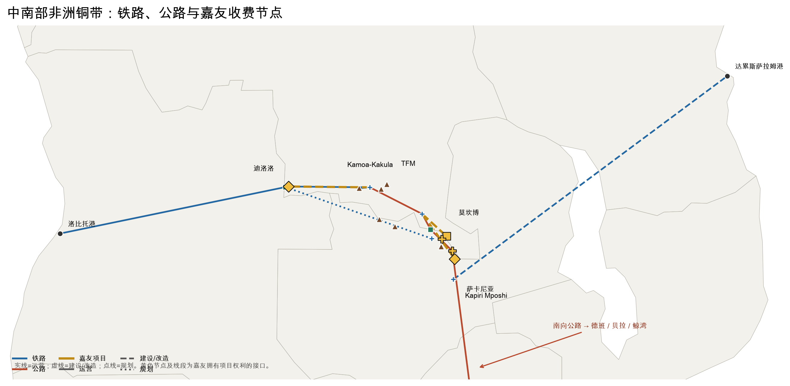

前瞻发现 · 2026-07-10 · 证据结论：NARROW / CONDITIONAL
核心发现：铜带运输正在从单一公路转为 Lobito、TAZARA 与多口岸并存的冗余网络。铁路会分走长距离公路货，却不会自动消灭清关、短驳、换装和陆港；嘉友的价值因此不在“拥有一条走廊”，而在它是否握有铁路仍需经过的收费接口。现有证据确认具体节点权利，却尚未确认增量货流一定进入这些节点。

Kamoa-Kakula 2025 年产铜 38.9 万吨；2026 年指引下修至 29–33 万吨，且从精矿转为阳极/粗铜口径。更多金属不等于同比例更多货重。
嘉友 2019 年公告记录 Kasumbalesa 高峰滞留 7–10 天。矿山随后主动预留 Lobito 每年 12–24 万吨铁路运力，说明客户在购买路线冗余，而非只比较最低运价。
Lobito 2025 年实际约 26.5 万吨，对应融资后的目标能力 460 万吨；TAZARA 当前约 30–40 万吨，对应改造后目标 240 万吨。两者之间是爬坡距离，不是已兑现供给。
传统分析把嘉友看作煤炭贸易与跨境运输的组合；地图把问题改写为：哪一段会被铁路商品化，哪一个节点仍有法定收费权。 这一区分决定了卡萨的高毛利能否复制，也决定迪洛洛与 TAZARA 5% 股权究竟是网络接口，还是昂贵的防守性期权。
真正改变结论的不是铜需求预测，而是把财务异常、路线替代和合同权利放在同一张图上。
供应链贸易占 61.8% 分产品收入，却只贡献 35.0% 毛利；陆港仅占 7.3% 收入，却贡献 23.6% 毛利，毛利率 59.48%。利润池不在收入最大的业务。
Lobito、TAZARA、KMTR 与多口岸同时推进。嘉友公告只授予具体道路、口岸和陆港的特许权，没有整条铜带走廊排他权。
西线铁路直接从 Kolwezi 经 Dilolo 向 Lobito；东南向公路则经过 Kasumbalesa、Sakania 或 Mokambo。竞争单位不是“非洲物流”，而是每次换模式和过边境的接口。
卡萨是 25 年特许；赞方萨卡尼亚和莫坎博均为 22 年；迪洛洛为 30 年且嘉友持 51%；TAZARA 项目嘉友持 5%，但单独经营与收费权未披露。
2025 年陆港收入增长 24.38%，卡萨车流和货运量增长；赞方恩多拉—萨卡尼亚 17.26 公里道路于 2026 年 2 月开始收费。现有节点有效，新节点仍待验证。
铁路可在矿区附近装货，Kamoa 已用行动证明分流；迪洛洛投资更大、仍处开工准备。结论由“网络平台”收窄为“节点资产 + 未兑现接口期权”。
| 可以确认 | 仍不能确认 |
|---|---|
| 嘉友拥有若干长期、项目级经营或收费权 | 新铁路会增加嘉友节点车流 |
| 现有陆港与贸易的毛利结构显著不同 | 卡萨的回报可以复制到迪洛洛和赞比亚项目 |
| 铁路将分走部分长距离公路货 | 客户会为“确定性”支付多少溢价 |
| 多走廊建设及货主预留运力反映冗余需求 | 嘉友已形成跨节点统一调度与客户复用 |
结论不是“铁路利好或利空”，而是铁路份额上升时，嘉友节点份额能否保持。以下全部用 2025=100 的方向指数，避免把未披露费率包装成收入预测。
矿量 125 / 节点份额 120
铁路爬坡较慢，矿端恢复，嘉友口岸和接入道路承担更多分流与中断备份；陆港收入与毛利同步增长。
矿量 115 / 节点份额 100
铁路拿走长途份额，萨卡尼亚与莫坎博保留部分通关、短驳和公路接入；节点价值存在但不扩张。
矿量 95 / 节点份额 70
铁路近矿装载或改走替代边境，嘉友新项目维持高资本开支，陆港吞吐与毛利同时下降。
| 信号 | 要观察的数据 | 怎样改变结论 |
|---|---|---|
| 1. 铁路爬坡 | LAR 实际吞吐、TAZARA 修复里程与货运量，而非目标能力 | 铁路加速且嘉友节点不增长，长途分流占主导 |
| 2. 节点兑现 | 萨卡尼亚、莫坎博、迪洛洛投运日期；车流、费率、维护资本开支 | 按期投运但无车流，说明权利不等于利润池 |
| 3. 财务指纹 | 陆港分部收入、毛利、现金回收；是否披露跨节点客户复用 | 毛利率与现金回报下降，卡萨经济性不可复制 |